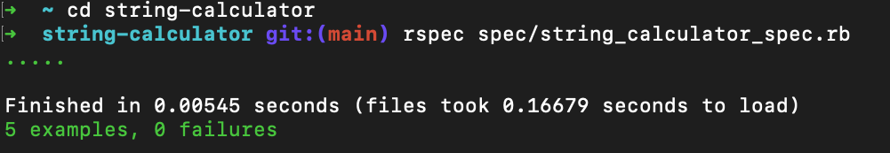

Ruby
What is Ruby?
Ruby is… A dynamic, open source programming language focused on simplicity and productivity. Its elegant syntax feels natural to read and easy to write.
How to install Ruby with RVM?
Install RVM
Run the following commands on your production server to install RVM:
$ sudo gpg --keyserver hkp://keys.gnupg.net --recv-keys 409B6B1796C275462A1703113804BB82D39DC0E3
$ curl -sSL https://get.rvm.io | sudo bash -s stable
$ sudo usermod -a -G rvm `whoami`
You may need to use gpg2 instead of gpg on some systems.
On systems where sudo is configured with secure_path, the shell environment needs to be modified to set rvmsudo_secure_path=1. secure_path is set on most Linux systems, but not on macOS. The following command tries to autodetect whether it is necessary to install rvmsudo_secure_path=1, and only installs the environment variable if it is the code.
$ if sudo grep -q secure_path /etc/sudoers; then sudo sh -c "echo export rvmsudo_secure_path=1 >> /etc/profile.d/rvm_secure_path.sh" && echo Environment variable installed; fi
When you are done with all this, relogin to your server to activate RVM. This is important: if you don’t relogin, RVM doesn’t work. Also if you use gnu screen or another terminal multiplexer, RVM also won’t work; you must use a plain ssh session.
Install the Ruby version you want
Usually, installing the latest Ruby version will suffice. If you are deploying the example app from the quickstart, then that example application works with all Ruby versions.
However, if you are deploying your own app, then your app may have a specific Ruby version requirement.
To install the latest version of Ruby, run:
$ rvm install ruby
$ rvm --default use ruby
To install a specific version of Ruby, run:
$ rvm install ruby-X.X.X
$ rvm --default use ruby-X.X.X
Replace X.X.X with the Ruby version you want.
Create the simplest Ruby project to get started
Setting up a project/environment is always the first challenge you face when you are learning a new language.
Although creating a Ruby project is not a difficult task, it might seem so when you are first starting or when you are doing it for first time. Having to understand all the necessary files to run a project might feel a bit overwhelming, specially when you are not familiar with the terminology and structure.
Luckily, we have tools that could help us with the setting up and other configurations.
Bundler & Gemfile
Bundle is the most commonly used tool or gem (as Ruby packages are called) that could help with the management of the dependencies in the project (test libraries,…)
Bundler needs to be installed in our system first and once successfully installed, the command bundle should be accessible to use.
In a new terminal window, run the following command:
$ gem install bundler
One way to test if you have already installed it, it is running the following command and checking that a path is returned.
$ which bundler
To follow, create a project directory.
$ mkdir ~/Workspace/coin_changer && cd ~/Workspace/coin_changer
Set bundle as your dependency manager running the following command:
$ bundle init
Bundle will automatically create a Gemfile, a file where your project dependencies will be specified.
Structure
The most common structure used for a ruby project is to have two main directories:
A directory called lib that will contain the source files.
$ mkdir lib && cd lib
For a simplest project, just create a .rb file to include your source code:
$ touch coin_changer.rb
A spec directory that will contain the tests.
$ mkdir spec && cd spec
Create the test file for the .rb file, previously created (Important! spec files have to be named with a _specsuffix or the tests will not run).
$ touch coin_changer_spec.rb
You will have something like this:
|- lib
|- coin_changer.rb
|
|- spec
|- coin_changer_spec.rb
|
|- Gemfile
Rspec
Rspec is a testing framework that will help creating a running tests in Ruby. In order to work, it needs to be added to the Gemfile of your project.
Include the RSpec dependency in the list of gems of the Gemfile:
Install the dependencies (RSpec in this case) with bundle:
$ bundle install
and initiate it:
$ rspec --init
The previous command will also add a spec_helper.rb file to the spec directory.
|- lib
|- coin_changer.rb
|
|- spec
|- spec_helper.rb
|- coin_changer_spec.rb
|
|- Gemfile
|- Gemfile.lock
To run the tests, now you will only need to run the following command:
$ rspec
Let’s do an exercise
You will need something like this:
|- lib
|- string_calculator.rb
|
|- spec
|- spec_helper.rb
|- string_calculator_spec.rb
|
|- Gemfile
|- Gemfile.lock
Then put this code in your file string_calculator_spec.rb:
require "./lib/string_calculator"
describe StringCalculator do
it "returns zero" do
calculator = StringCalculator.new
result = calculator.add("")
expect(result).to eq(0)
result = calculator.add(nil)
expect(result).to eq(0)
end
it "returns the same number" do
calculator = StringCalculator.new
result = calculator.add("2")
expect(result).to eq(2)
result = calculator.add("8")
expect(result).to eq(8)
result = calculator.add("99")
expect(result).to eq(99)
end
it "returns the sum of 2 numbers" do
calculator = StringCalculator.new
result = calculator.add("2,3")
expect(result).to eq(5)
result = calculator.add("7,11")
expect(result).to eq(18)
end
it "returns the sum of any numbers" do
calculator = StringCalculator.new
result = calculator.add("1,2,3,4,5")
expect(result).to eq(15)
result = calculator.add("10,20,30")
expect(result).to eq(60)
end
it "returns the sum of any numbers with another spliter" do
calculator = StringCalculator.new
result = calculator.add("1\n2,3\n4,5")
expect(result).to eq(15)
result = calculator.add("10\n20\n30")
expect(result).to eq(60)
end
end
Then put this code in your file string_calculator.rb:
class StringCalculator
def add(string)
string == nil ? 0 : string.tr("\n",",").split(",").map(&:to_i).sum
end
end
if __FILE__ == $0
calculator = StringCalculator.new
result = calculator.add("")
p result
end
Now run this:
$ rspec spec/string_calculator_spec.rb
You will see something like this:
